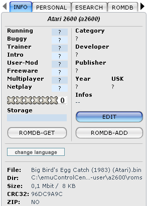
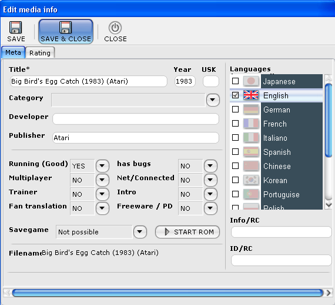
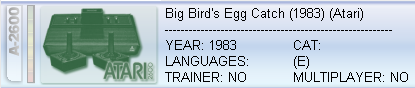

ECC Documentation - Getting started... - Add/Edit ROM
media info
Add/Edit ROM media info
- In this example you can see how ROM media info is being added to
a ROM, this example shows how to add ROM media information
for a 'Atari 2600' ROM.
1. On the right side of your
screen, press the 'EDIT' button under the 'INFO' tab.

2. A media info windows
appears, here you can add/edit your ROM media info.

3.
Click on 'Save & close' to save your input and close the
window.
-
4. Your information has been
updated and is directly viewable in the ROM list (detailed
list).
